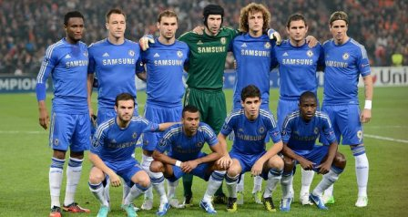

| Back | ||||||||||||||||
Chelsea - The Great English Soccer Team |
||||||||||||||||
|

Chelsea Football Club is an English football club based in Fulham, London. Founded in 1905, they play in the Premier League and have spent most of their history in the top tier of English football. Their home is the 41,837-seat Stamford Bridge stadium, where they have played since their establishment. Chelsea had their first major success in 1955, when they won the league championship, and won various cup competitions during the 1960s, 1970s, 1990s and 2000s. Overall, Chelsea have won four league titles, seven FA Cups, four League Cups and four FA Community Shields. The club have also been successful in continental competitions, winning two UEFA Cup Winners' Cups, one UEFA Super Cup and one UEFA Champions League title. In 2009–10, the club won their first "Double" and in 2012 became the first London club to win the UEFA Champions League. Chelsea's regular kit colours are royal blue shirts and shorts with white socks. The club's crest has been changed several times in attempts to re-brand the club and modernise its image. The current crest, featuring a ceremonial lion rampant regardant holding a staff, is a modification of the one introduced in the early 1950s. The club has sustained the fifth highest average all-time attendance in English football. Their average home gate for the 2011–12 season was 41,478, the sixth highest in the Premier League. In April 2012 it was ranked by Forbes Magazine as the seventh most valuable football club in the world, at £473 million ($761 million). Since 2003, Chelsea have been owned by Russian billionaire Roman Abramovich. |
||||||||||||||||
Team Results
|
||||||||||||||||
©Copyright Liliya Artyukh - Student number: 300702887 - Section: 063 - Winter 2013 - COMP213 - Web Interface Design |